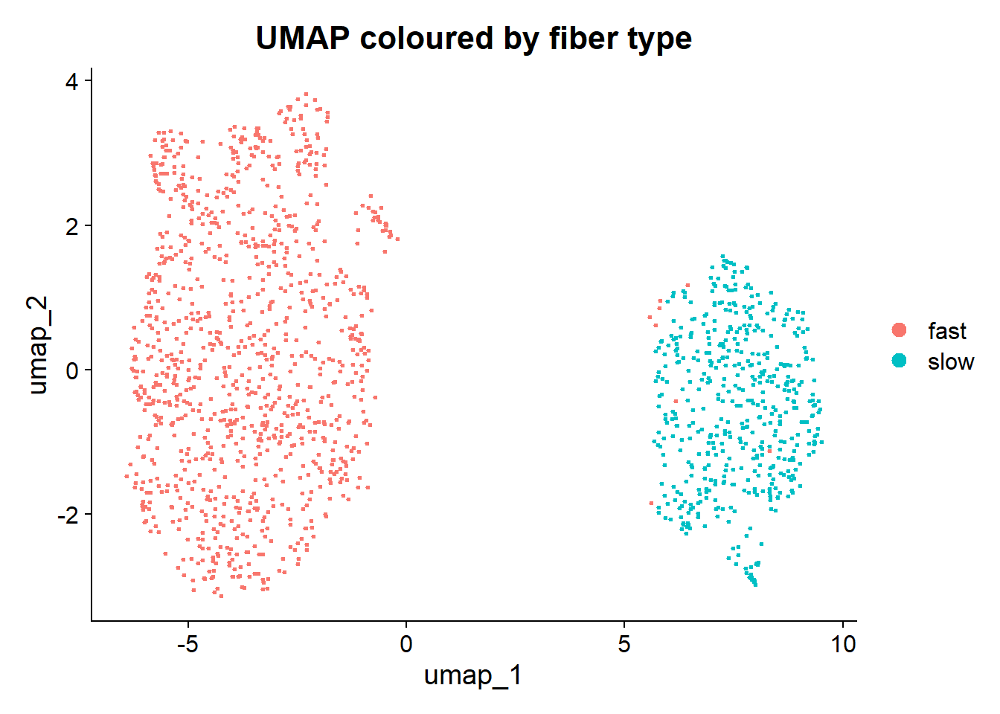

Describe the structure of a single-fiber proteomics dataset and access its intensity matrix and sample metadata.
Run and interpret linear (PCA) and non-linear (UMAP) dimensionality-reduction methods on protein-intensity data.
Extract latent vectors from a low-dimensional embedding and relate them to biological covariates.
Use neighbourhood-based testing (MILO) to detect differential abundance across phenotypic groups in single-fiber space.
Visualize the results of a differential abundance analysis using boxplots, volcano plots, UMAP feature plots, and covariate–intensity associations.
Build heatmaps of differentially abundant proteins, cluster them into co-regulated modules, and link those modules to biological pathways.
1 Dataset: Single-Fiber Human Muscle Proteomics
Note
This section is a placeholder — update with the actual cohort description, acquisition method, and any preprocessing already applied before the session.
The example dataset contains protein intensities for thousands of single muscle fibers dissected from human donors. The data is distributed as an .rds file containing a named list with (at least) two objects:
Object
Type
Rows
Columns
Notes
intensities
matrix / data.frame
proteins
single fibers
log2-transformed, normalized intensities
metadata
data.frame
single fibers
sample-level annotations
donor ID, fiber type, condition, etc.
TODO: replace with the exact object names, dimensions, normalization scheme, and donor / condition design once finalized.
# Load the prepared datasetfiber_data <-readRDS("data/single_fiber_proteomics.rds")# Inspect structurestr(fiber_data, max.level =1)
List of 2
$ intensities: num [1:2373, 1:1514] 10.9 13.5 15.7 12.2 11.9 ...
..- attr(*, "dimnames")=List of 2
$ metadata : tibble [1,514 × 4] (S3: tbl_df/tbl/data.frame)
# Convenience handlesintensities <- fiber_data$intensities # proteins x fibersmetadata <- fiber_data$metadata # one row per fiberdim(intensities)
[1] 2373 1514
head(metadata)
Exercise 1.1: Inspect metadata. Which variables are biological and which are technical? Why does this distinction matter for the analyses that follow?
Exercise 1.1 — possible answer
TODO — fill in once the metadata fields are finalized. The point to make: biological covariates are what we want the embedding to reflect; technical covariates are confounders we want to rule out as drivers of the structure we see.
2 Stage 1: Dimensionality Reduction & Clustering
flowchart TD A[/"Protein intensity matrix\n(proteins × fibers)"/]:::data A --> B subgraph pca ["§1.1 – 1.2 · PCA"] direction TB B(["prcomp()"]):::method --> C["PC scores\n(fiber × PC)"]:::output B --> D["PC loadings\n(protein × PC)"]:::output C --> E(["Scree plot · Scatter plots\nCovariate associations"]):::viz D --> F(["Ranked GSEA\nBiology of each PC axis"]):::viz end C -->|"PCs 1–20\nglobal structure"| G subgraph umap ["§1.3 – 1.4 · UMAP & Clustering"] direction TB G(["RunUMAP()"]):::method --> H["2-D fiber-state embedding"]:::output H --> I(["FindNeighbors +\nFindClusters"]):::method I --> J["Fiber-type labels\nfast / slow"]:::output end C -->|"kNN graph\nbuilt on PCs"| K subgraph milo ["§1.5 · MILO — Differential Abundance"] direction TB K(["buildGraph +\nmakeNhoods"]):::method J --> L["Design matrix\nsubject × time × fiber_type"]:::output K --> M(["testNhoods()"]):::method L --> M M --> N["DA neighbourhoods\n(SpatialFDR)"]:::output H -->|"UMAP layout\nfor visualisation"| N end classDef data fill:#dbeafe,stroke:#3b82f6,color:#1e3a5f classDef method fill:#d1fae5,stroke:#059669,color:#064e3b classDef output fill:#fef9c3,stroke:#ca8a04,color:#451a03 classDef viz fill:#f3e8ff,stroke:#7c3aed,color:#2e1065
flowchart TD
A[/"Protein intensity matrix\n(proteins × fibers)"/]:::data
A --> B
subgraph pca ["§1.1 – 1.2 · PCA"]
direction TB
B(["prcomp()"]):::method --> C["PC scores\n(fiber × PC)"]:::output
B --> D["PC loadings\n(protein × PC)"]:::output
C --> E(["Scree plot · Scatter plots\nCovariate associations"]):::viz
D --> F(["Ranked GSEA\nBiology of each PC axis"]):::viz
end
C -->|"PCs 1–20\nglobal structure"| G
subgraph umap ["§1.3 – 1.4 · UMAP & Clustering"]
direction TB
G(["RunUMAP()"]):::method --> H["2-D fiber-state embedding"]:::output
H --> I(["FindNeighbors +\nFindClusters"]):::method
I --> J["Fiber-type labels\nfast / slow"]:::output
end
C -->|"kNN graph\nbuilt on PCs"| K
subgraph milo ["§1.5 · MILO — Differential Abundance"]
direction TB
K(["buildGraph +\nmakeNhoods"]):::method
J --> L["Design matrix\nsubject × time × fiber_type"]:::output
K --> M(["testNhoods()"]):::method
L --> M
M --> N["DA neighbourhoods\n(SpatialFDR)"]:::output
H -->|"UMAP layout\nfor visualisation"| N
end
classDef data fill:#dbeafe,stroke:#3b82f6,color:#1e3a5f
classDef method fill:#d1fae5,stroke:#059669,color:#064e3b
classDef output fill:#fef9c3,stroke:#ca8a04,color:#451a03
classDef viz fill:#f3e8ff,stroke:#7c3aed,color:#2e1065
Analysis flow for Stage 1. Boxes with rounded corners are methods; rectangles are data objects; shaded subgraphs group the subsections.
2.1 Why reduce dimensionality?
A single-fiber proteomics matrix has thousands of proteins measured across thousands of fibers — too many dimensions to visualize directly, and most pairs of proteins are correlated. Dimensionality reduction projects the data into a small number of axes that capture the strongest sources of variation, letting us see global structure (fiber types, donors, conditions) in two or three dimensions.
Method
Type
What it preserves
Use it for
PCA
Linear
Global variance; directions of maximum spread
Detecting dominant gradients / batches
UMAP
Non-linear
Local neighborhood structure
Revealing discrete populations / clusters
2.2 1.1 Principal Component Analysis (PCA)
PCA finds orthogonal linear combinations of proteins that maximize variance. PC1 captures the strongest gradient in the data, PC2 the next strongest orthogonal to PC1, and so on. Each fiber gets a score on each PC; each protein gets a loading.
# prcomp expects observations in rows and features in columns,# so we transpose: rows = fibers, columns = proteins.# It does NOT tolerate NA, so we impute first using the downshift from a normal distribution# (row-wise on the original matrix).imp <- intensities %>% PhosR::tImpute() %>%as.data.frame()pca_res <-prcomp(t(imp), scale. =TRUE)# --- Scree plot: % variance explained per PC ---var_exp <- (pca_res$sdev^2) /sum(pca_res$sdev^2)tibble(PC =seq_along(var_exp), var_exp = var_exp) %>%slice_head(n =20) %>%ggplot(aes(PC, var_exp)) +geom_col() +scale_x_continuous(breaks =1:20) +scale_y_continuous(labels = scales::percent) +theme_minimal() +labs(y ="Variance explained")
# --- Attach PC1 / PC2 back to metadata so we can use them for downstream analyses ---metadata <- metadata %>%left_join(as_tibble(pca_res$x, rownames ="fiber_id") %>%select(fiber_id, PC1, PC2),by ="fiber_id" )# --- PCA scatter: PC1 vs PC2, coloured by time, shaped by subject ---ggplot(metadata, aes(PC1, PC2, colour = time)) +geom_point(size =0.8, alpha =0.7) +theme_minimal()
Exercise 1.2: Look at the scree plot. How many PCs together explain the major part of the variance?
Exercise 1.2 — possible answer
PC1 alone explains a great % of variance, almost three times more than PC2. This data set has an important amount of information captured by PC1.
Exercise 1.3: Time doesn’t seem to be explained by either PC1 or PC2.
What about subject? Can either PC1 or PC2 explain subject variability? Color the PCA by subject and find out!
Then, try extracting PC3 and plotting it against PC1. Does it capture the effect of time better? Look at the previous code chunk for inspiration!
metadata_exercise <- metadata %>%left_join(as_tibble(pca_res$x, rownames ="fiber_id") %>%select(fiber_id, PC3),by ="fiber_id" )# --- PCA scatter: PC1 vs PC3, coloured by time ---ggplot(metadata_exercise, aes(PC1, PC3, colour = time)) +geom_point(size =0.8, alpha =0.7) +theme_minimal()
2.3 1.2 Extracting vectors of information from PCA
The single fiber PC scores (sample-level information) live in pca_res$x (one row per fiber, one column per PC). Protein loadings live in pca_res$rotation (feature-level information). These two matrices can be used to extract valuable information for downstream analyses:
We already joined the PC score/sample for PC1 and PC2 back to metadata for downstream modelling.
These can be tested for associations with protein intensities using linear models, GAMs, etc.(lm( ~ intensity + PCx)).
By extracting the loadings for each PC, we can also see which proteins are the greatest drivers of that PC, which is linking PCs with biological information.
Let’s first check whether some of our PCs are associated with the covariate time:
pc_scores <-as_tibble(pca_res$x, rownames ="fiber_id") %>%left_join(metadata %>% dplyr::select(!c(PC1, PC2)), by ="fiber_id")# Quick association screen: which covariates drive which PCs?# Example: PC1 vs. timesummary(lm(PC1 ~ time, data = pc_scores))
Call:
lm(formula = PC1 ~ time, data = pc_scores)
Residuals:
Min 1Q Median 3Q Max
-38.061 -18.944 3.176 15.028 39.614
Coefficients:
Estimate Std. Error t value Pr(>|t|)
(Intercept) 1.1755 0.6832 1.720 0.0856 .
timepost -2.2787 0.9513 -2.395 0.0167 *
---
Signif. codes: 0 '***' 0.001 '**' 0.01 '*' 0.05 '.' 0.1 ' ' 1
Residual standard error: 18.5 on 1512 degrees of freedom
Multiple R-squared: 0.003781, Adjusted R-squared: 0.003122
F-statistic: 5.738 on 1 and 1512 DF, p-value: 0.01672
summary(lm(PC3 ~ time, data = pc_scores))
Call:
lm(formula = PC3 ~ time, data = pc_scores)
Residuals:
Min 1Q Median 3Q Max
-24.636 -6.601 -1.533 5.464 44.715
Coefficients:
Estimate Std. Error t value Pr(>|t|)
(Intercept) 2.9714 0.3643 8.155 7.24e-16 ***
timepost -5.7602 0.5073 -11.355 < 2e-16 ***
---
Signif. codes: 0 '***' 0.001 '**' 0.01 '*' 0.05 '.' 0.1 ' ' 1
Residual standard error: 9.864 on 1512 degrees of freedom
Multiple R-squared: 0.07857, Adjusted R-squared: 0.07796
F-statistic: 128.9 on 1 and 1512 DF, p-value: < 2.2e-16
# PC1 is associated with time, however, PC3 shows a greater association
This is helpful to narrow down which PCs carry biological information so we can explore them in detail. However, this doesn’t directly tell us which proteins are implicated in the association.
To do that, PCA loadings can be extracted from pca_res$rotation and used, for example, as an input for a ranked GSEA test. The ranking statistic here is the loading of each protein on PC1, a named weight, where strongly positive and strongly negative loadings both indicate proteins that drive the axis (just in opposite directions).
You probably are familiar with ranked GSEA from previous sessions, in this case we will use clusterProfiler::gseGO to walk down the ranked list and tests whether GO Biological Process terms are enriched at one extreme of the PC.
GSEA functions can take some time to run, so I recommend to run this chunk line be line and to be patient :)
# --- 1. Extract PC1 loadings as a named, ranked vector ---PC1_loadings <-sort(pca_res$rotation[, "PC1"], decreasing =TRUE)head(PC1_loadings, 10) # most positive
# --- 2. Ranked GSEA against GO Biological Process ---# Gene symbols are the keys, so we set keyType = "SYMBOL".# On Windows, the default BiocParallel backend (SnowParam) sometimes fails# to serialize the permutation step. Force serial execution to avoid this.BiocParallel::register(BiocParallel::SerialParam())set.seed(42)gse_PC1 <- clusterProfiler::gseGO(geneList = PC1_loadings,OrgDb = org.Hs.eg.db::org.Hs.eg.db,keyType ="SYMBOL",ont ="BP",minGSSize =15,maxGSSize =500,pvalueCutoff =0.05,verbose =FALSE)# --- 3. Tidy results and pick top terms (10 up, 10 down by padj) ---gse_PC1_df <-as_tibble(gse_PC1@result) %>%arrange(p.adjust)top_terms <-bind_rows( gse_PC1_df %>%filter(NES >0) %>%slice_head(n =10), gse_PC1_df %>%filter(NES <0) %>%slice_head(n =10))# --- 4. Dot plot ---top_terms %>%ggplot(aes(x = NES,y = forcats::fct_reorder(Description, NES),size =-log10(p.adjust),colour = NES)) +geom_point() +geom_vline(xintercept =0, linetype ="dashed", colour ="grey60") +scale_colour_gradient2(low ="steelblue", mid ="grey80", high ="firebrick",midpoint =0) +theme_minimal() +labs(title ="GO:BP terms ranked by PC1 loading",x ="Normalized enrichment score (NES)",y =NULL,size ="-log10(p.adjust)")
Among the different terms, we can see that metabolism-related terms (hence proteins) are important drivers of the variance observed in PC1. If you are familiar with skeletal muscle physiology you might already start thinking that this is likely reflecting fiber type differences in the data. We will examine this in detail below!
Exercise 1.4: PC1 captures the dominant axis of variation in the data, but the other PCs may carry biology too. Repeat the ranked GSEA for PC2 and PC3 and inspect their dot plots. What is the dominant biology associated with each? Do any pathways appear on multiple PCs (and what would that mean)?
Exercise 1.4 — solution
The workflow is identical to PC1 — only the column we pull from pca_res$rotation changes. You could also consider wrapping it in a small helper to avoid repeating yourself :)
2.4 1.3 Uniform Manifold Approximation and Projection (UMAP)
UMAP is a non-linear embedding that prioritizes preserving local neighbourhood structure. It uses the information from multiple linear PCs to extract a high-dimensional picture of your data and is well-suited for revealing discrete populations (e.g. fast vs. slow fibers) that may not separate along a single linear axis.
We use the Seurat workflow, which packages PCA → neighbour graph → UMAP into a single object and provides DimPlot / FeaturePlot helpers we will reuse later in this workshop.
# As PCA, Seurat does not tolerate NAs, so we feed it the imputed matrix from the previous PCA step.# Rownames of the metadata data.frame must match the column names of the matrix.md <- metadata %>%column_to_rownames("fiber_id")seu <- Seurat::CreateSeuratObject(counts = imp, meta.data = md)# Intensities are already log-transformed and normalized, so we skip# NormalizeData. Treat every protein as a "variable feature".Seurat::VariableFeatures(seu) <-rownames(seu)# This is a little trick to add our normalized data into its designated slot in the Seurat object # avoiding the need to over-normalizeseu[["RNA"]]$data <- seu[["RNA"]]$counts# --- Reuse the prcomp PCs from Section 1.1 as Seurat's PCA reduction ---# You could also input a matrix and calculate the PCs with Seurat, but the way PCs are calculated might change slightly# Since we have already explored our main PCs and know which covariates they are associated with,# Let's stick with the ones we have now.pc_emb <- pca_res$x[, 1:30]pc_ldg <- pca_res$rotation[, 1:30]colnames(pc_emb) <-paste0("PC_", seq_len(ncol(pc_emb)))colnames(pc_ldg) <-paste0("PC_", seq_len(ncol(pc_ldg)))seu[["pca"]] <- Seurat::CreateDimReducObject(embeddings = pc_emb[colnames(seu), ],loadings = pc_ldg,assay = Seurat::DefaultAssay(seu),key ="PC_")# Now we run the UMAP function and use the DimPlot() function to visualize it:set.seed(42)seu <- Seurat::RunUMAP(seu, dims =1:20, verbose =FALSE)Seurat::DimPlot(seu, reduction ="umap", group.by ="time", pt.size =0.4)
The embedding itself is stored in Embeddings(seu, "umap") if you you want to access the underlying data.frame for custom plots or other analyses:
Exercise 1.5: Compare the UMAP to the PC1 vs PC2 and PC1 vs PC3 scatter plots you made in Exercises 1.3.1 and 1.3.2. Does any structure become visible in the UMAP that the linear projections missed? Can you tell from the UMAP alone whether fibers separate by time?
Exercise 1.5 — possible answer
UMAP often resolves discrete sub-populations into well-separated islands that the linear PCs only show as smooth gradients along a single axis. In this dataset this could be due to the fiber-type structure (slow / fast). The time effect is more subtle and it doesn’t create distinct clusters in the UMAP layout. However, it seems like in one of the two fiber populations, pre and post samples are more clearly separated in the UMAP.
Exercise 1.6: UMAP has two knobs that change the layout substantially. Try varying each in turn and re-plot.
Re-run UMAP with n.neighbors = 5 and n.neighbors = 100. How does each value emphasize local vs. global structure?
Re-run UMAP using only the first 5 PCs (dims = 1:5) and 30 PCs (dims = 1:30). What does the input dimensionality control?
Exercise 1.6.1 — solution
A Seurat object can hold multiple UMAP reductions side-by-side via reduction.name, so we don’t need to rebuild the object:
Small n.neighbors emphasizes very local structure (more, smaller islands; noisier layout). Large n.neighbors emphasizes global structure (fewer, broader clusters; closer to a PCA-like view).
dims controls how many PCs feed into the neighbour graph. With only 5 PCs, UMAP sees a low-resolution summary of the data — fine for the dominant axis, but it discards the variation captured by later PCs. With 30, more biology and more noise both enter; the layout is richer but can become unstable, especially if many of those PCs carry mostly noise. The scree plot from Exercise 1.2 is a good guide — pick dims up to where the variance curve flattens.
2.5 1.4 Clustering and fiber-type annotation
The UMAP shows two distinct populations. If you are familiar with muscle physiology, you may remember that human muscle fibers can be broadly classified into two fiber types, slow (type 1) or fast (type 2). Each fiber type has distinct metabolic and contractile properties:
Marker
Fiber type
MYH7
Type I (slow oxidative)
MYH2
Type IIa (fast oxidative/glycolytic)
To explore whether our two UMAP populations correspond to the known muscle fiber types, we can extract the UMAP clusters that make the two populations and visualize the expression of known fiber type markers. If we divide this into tasks it would be: (1) hard-cluster the fibers on the kNN graph we already built, (2) label each cluster as fast or slow based on the dominant myosin heavy chain, and (3) carry that label downstream into our analysis.
# FindNeighbors uses the PCA reduction we already injected; FindClusters runs# Louvain on that graph.seu <- Seurat::FindNeighbors(seu, dims =1:20, verbose =FALSE)seu <- Seurat::FindClusters(seu, resolution =0.5, verbose =FALSE)Seurat::DimPlot(seu, reduction ="umap", group.by ="seurat_clusters",pt.size =0.4, label =TRUE) + ggplot2::ggtitle("UMAP clusters")
# Confirm which clusters are slow (MYH7-high) vs fast (MYH2-high)Seurat::FeaturePlot(seu, features =c("MYH7", "MYH2"),reduction ="umap", pt.size =0.4, order =TRUE) & ggplot2::scale_colour_viridis_c()
Based on this, it is very clear that the smaller population corresponds to slow muscle fibers, whereas the bigger population englobes fast muscle fibers. To make sure, let’s assess the mean MYH expression for each of the Seurat clusters:
# Per-cluster mean intensity for the two myosin markerscluster_myh <- tibble::tibble(fiber_id =colnames(seu),cluster =as.character(seu$seurat_clusters),MYH7 = intensities["MYH7", colnames(seu)],MYH2 = intensities["MYH2", colnames(seu)] ) %>%group_by(cluster) %>%summarise(MYH7 =mean(MYH7, na.rm =TRUE),MYH2 =mean(MYH2, na.rm =TRUE),n = dplyr::n(),.groups ="drop" ) %>%mutate(fiber_type =ifelse(MYH2 > MYH7, "fast", "slow"))cluster_myh
Now let’s label the clusters as fast and slow, add this information to metadata and re-color our UMAP:
# Push the fiber_type label back onto seu and metadatafiber_type_map <-setNames(cluster_myh$fiber_type, cluster_myh$cluster)seu$fiber_type <-unname(fiber_type_map[as.character(seu$seurat_clusters)])metadata <- metadata %>%left_join( tibble::tibble(fiber_id =colnames(seu),fiber_type = seu$fiber_type),by ="fiber_id" )# Sanity check on the UMAPSeurat::DimPlot(seu, reduction ="umap", group.by ="fiber_type",pt.size =0.4) + ggplot2::ggtitle("UMAP coloured by fiber type")

Exercise 1.7: ACTN3 is another well-established fast-fiber marker. Use FeaturePlot to confirm that the clusters you labelled as "fast" also show elevated ACTN3 — if they don’t, your fiber-type assignment may need rechecking.
Exercise 1.7 — solution
Seurat::FeaturePlot(seu, features ="ACTN3", reduction ="umap",pt.size =0.4, order =TRUE) + ggplot2::scale_colour_viridis_c()
2.6 1.5 Differential abundance in embedding space — MILO
MILO tests for differential abundance across neighbourhoods of a kNN graph built on the embedding, instead of treating every fiber as independent. It avoids hard clustering and gives a continuous map of where two groups differ in fiber-state space.
Now that every fiber carries a fiber_type label we can refine the design: define the biological sample as subject × time × fiber_type (4 samples per subject, 32 total) and ask two questions of the data:
Main effect — block on subject and fiber type and test the time effect averaged across both fiber types.
Stratified by fiber type — fit a separate post − pre contrast within fast fibers and within slow fibers, then count and compare how many neighbourhoods are significant in each. If one fiber type responds more to the perturbation, it should show more (or larger-magnitude) significant neighbourhoods.
# --- Build a local metadata table with the biological "sample" column ---# MILO counts how many fibers from each sample fall in each neighbourhood,# so `sample` must group fibers, NOT identify them. With fiber_type now# available, each (subject, time, fiber_type) cell is one biological sample.## We pull `fiber_type` directly from `seu` so this chunk works regardless of# whether `metadata` was reset by re-running an upstream chunk.stopifnot("fiber_type"%in%colnames(seu@meta.data))md <- metadata %>%mutate(sample_id =paste(subject_id, time, fiber_type, sep ="_")) %>%as.data.frame()rownames(md) <- md$fiber_id# Column order of the SCE assay must match metadata row order so colData lines upimp_mat <-as.matrix(imp)[, md$fiber_id]sce <- SingleCellExperiment::SingleCellExperiment(assays =list(logcounts = imp_mat),colData = md)# --- Reuse the PCs and UMAP coordinates from Sections 1.1 and 1.3 ---# Sharing coordinates across all three steps (PCA -> UMAP -> MILO) means the# neighbourhood map shown by plotNhoodGraphDA() is the SAME embedding the# students saw earlier in the Seurat DimPlot, not a re-computation that# would shuffle / rotate the layout.SingleCellExperiment::reducedDim(sce, "PCA") <- pca_res$x[colnames(sce), 1:30]SingleCellExperiment::reducedDim(sce, "UMAP") <- Seurat::Embeddings(seu, "umap")[colnames(sce), ]milo_obj <- miloR::Milo(sce)milo_obj <- miloR::buildGraph(milo_obj, k =30, d =20, reduced.dim ="PCA")milo_obj <- miloR::makeNhoods(milo_obj, prop =0.1, k =30, d =20,refined =TRUE, reduced_dims ="PCA")milo_obj <- miloR::countCells(milo_obj, meta.data = md, sample ="sample_id")milo_obj <- miloR::buildNhoodGraph(milo_obj)# --- Design table: one row per sample_id ---design <- md %>%distinct(sample_id, subject_id, time, fiber_type) %>%as.data.frame()rownames(design) <- design$sample_id# Set explicit reference levels so the contrast names are predictabledesign$time <-factor(design$time, levels =c("pre", "post"))design$fiber_type <-factor(design$fiber_type, levels =c("fast", "slow"))# Combined cell-means factor (fast_pre / fast_post / slow_pre / slow_post).# This avoids colon-named interaction terms, which makeContrasts() can't parse.design$group <-factor(paste(design$fiber_type, design$time, sep ="_"),levels =c("fast_pre", "fast_post", "slow_pre", "slow_post"))# 1) MAIN effect: post vs pre, blocking on subject and fiber_typeda_time <- miloR::testNhoods(milo_obj,design =~ subject_id + fiber_type + time,design.df = design)# 2) Time effect WITHIN each fiber type, as two separate contrasts on the# `group` factor. We drop the intercept (`~ 0 + group + ...`) so that all# four group levels show up as named coefficients — otherwise the reference# level (`fast_pre`) is absorbed into the intercept and the contrast# `groupfast_post - groupfast_pre` would fail. Same neighbourhoods for both# contrasts, so the resulting counts are directly comparable.da_fast <- miloR::testNhoods( milo_obj,design =~0+ group + subject_id,design.df = design,model.contrasts ="groupfast_post - groupfast_pre")da_slow <- miloR::testNhoods( milo_obj,design =~0+ group + subject_id,design.df = design,model.contrasts ="groupslow_post - groupslow_pre")# --- Count significant neighbourhoods per fiber type ---da_counts <- tibble::tibble(fiber_type =c("fast", "slow"),n_total =c(nrow(da_fast), nrow(da_slow)),n_sig =c(sum(da_fast$SpatialFDR <0.1, na.rm =TRUE),sum(da_slow$SpatialFDR <0.1, na.rm =TRUE)),n_up =c(sum(da_fast$SpatialFDR <0.1& da_fast$logFC >0, na.rm =TRUE),sum(da_slow$SpatialFDR <0.1& da_slow$logFC >0, na.rm =TRUE)),n_down =c(sum(da_fast$SpatialFDR <0.1& da_fast$logFC <0, na.rm =TRUE),sum(da_slow$SpatialFDR <0.1& da_slow$logFC <0, na.rm =TRUE)))da_counts
# --- Bar chart: significant neighbourhoods per fiber type ---da_counts %>% tidyr::pivot_longer(c(n_up, n_down),names_to ="direction", values_to ="n") %>%mutate(direction =recode(direction,n_up ="post > pre",n_down ="pre > post")) %>%ggplot(aes(fiber_type, n, fill = direction)) +geom_col(position ="dodge") +theme_minimal() +labs(x ="Fiber type",y ="Significant neighbourhoods (SpatialFDR < 0.1)",fill =NULL)
# --- The MILO maps themselves: where in fiber-state space each type changes ---miloR::plotNhoodGraphDA(milo_obj, da_time, layout ="UMAP", alpha =0.1) + ggplot2::ggtitle("Main time effect (post vs. pre)")
miloR::plotNhoodGraphDA(milo_obj, da_fast, layout ="UMAP", alpha =0.1) + ggplot2::ggtitle("post vs. pre — fast fibers")
miloR::plotNhoodGraphDA(milo_obj, da_slow, layout ="UMAP", alpha =0.1) + ggplot2::ggtitle("post vs. pre — slow fibers")
Exercise 1.8: Look at the da_counts table and the bar chart.
Which fiber type has more significant neighbourhoods between pre and post?
In each fiber type, are the changes mostly in one direction (more fibers in post) or balanced between gain and loss?
Cross-check against the two MILO maps — do the significant neighbourhoods for the fast contrast sit in the fast-dominant region of the UMAP, and likewise for slow? If a contrast lights up neighbourhoods that are dominated by the other fiber type, what does that tell you about how confident the count comparison should make you?
Exercise 1.8 — possible answer
TODO — depends on the dataset.
The interpretation pattern to look for:
If one fiber type has many more significant neighbourhoods than the other, that fiber type is more responsive to the perturbation. Pay attention to the direction too — post > pre and pre > post counts can tell you whether the population is expanding or shrinking in fiber-state space.
A contrast (e.g. fast post − pre) tests counts of fast fibers in every neighbourhood. Neighbourhoods that are essentially all-slow have near-zero fast counts and won’t pass the significance threshold no matter what — so the count comparison is fair only where each fiber type has enough cells to power the test. The two MILO maps make this visible: if the fast map only shows significant nhoods in the fast-dominant region, the test is doing the right thing.
The model fitted upstream (a per-protein GAM with s(PC1, by = time) and a subject random effect) returns, for every gene, three p-values that summarize different biological questions:
Column
Question it answers
Estimate_time1
Effect size (log2FC) of post vs. pre, averaged over PC1
Pr(>|t|)_time1
Is the protein differentially abundant between pre and post?
p_val_fiber_type
Is the protein’s intensity associated with PC1 (i.e. fiber type)?
p_val_interaction
Does the time effect depend on PC1 (i.e. fiber-type-specific response)?
Results are stored as a named list — one entry per gene, each entry containing a one-row tibble model_results. We start by flattening it into a tidy data frame for plotting.
model_list <-readRDS("results/model_results.rds")# Flatten the named list into one row per proteinda_results <- dplyr::bind_rows(lapply(model_list, `[[`, "model_results")) %>% dplyr::mutate(adj_p_time =p.adjust(`Pr(>|t|)_time1`, method ="BH"),adj_p_fiber_type =p.adjust(p_val_fiber_type, method ="BH"),adj_p_interaction =p.adjust(p_val_interaction, method ="BH") )head(da_results)
A quick orientation before we start visualising — how many proteins fail each null at adj_p < 0.05?
The first sanity check after any DA result is to look at the raw intensities of a few top hits, stratified by the variable of interest.
# Pick a top hit on the time effectfeature <- da_results %>%arrange(`Pr(>|t|)_time1`) %>% dplyr::slice(1) %>%pull(gene)plot_df <-tibble(fiber_id =colnames(intensities),intensity = intensities[feature, ]) %>%left_join(metadata, by ="fiber_id")ggplot(plot_df, aes(time, intensity, fill = time)) +geom_boxplot(outlier.shape =NA, alpha =0.6) +geom_jitter(width =0.2, size =0.3, alpha =0.3) +theme_minimal() +labs(title = feature, y ="log2 intensity")
Exercise 2.1: Use the example chunk above as a template.
Pick a protein that is not significant for the time test (e.g. one with adj_p_time > 0.5) and reproduce the boxplot. Does the lack of a pre → post shift match the test statistic?
Redraw the boxplot of the top time hit (S100A13) coloured by subject_id, with one line per subject connecting their pre and post means. Is the shift consistent across all 8 subjects, or driven by a few?
If all 8 lines slope in the same direction, the effect is consistent. If a couple of subjects buck the trend, the population estimate is being pulled by a subset.
3.2 2.2 Volcano plots
A volcano plot shows effect size (Estimate_time1, the log2FC of post − pre) on the x-axis against statistical significance (-log10 p-value) on the y-axis. It is the standard one-glance summary of a DA analysis.
# Annotate each protein as significant or not, build a rich hover label,# then build the volcano in ggplot and pipe it through plotly for hover.volcano_df <- da_results %>%mutate(sig =factor(ifelse(adj_p_time <0.05, "adj_p < 0.05", "n.s."),levels =c("n.s.", "adj_p < 0.05")),label =paste0("gene: ", gene,"<br>log2FC: ", signif(Estimate_time1, 3),"<br>adj_p: ", signif(adj_p_time, 3) ) )p_volcano <-ggplot( volcano_df,aes(x = Estimate_time1, y =-log10(`Pr(>|t|)_time1`),colour = sig, text = label) ) +geom_point(alpha =0.6, size =1.2) +geom_hline(yintercept =-log10(0.05), linetype ="dashed", colour ="grey60") +geom_vline(xintercept =0, linetype ="dashed", colour ="grey60") +scale_colour_manual(values =c("n.s."="grey70", "adj_p < 0.05"="firebrick")) +theme_minimal() +labs(x ="log2FC (post − pre)", y ="-log10(p-value)",colour =NULL,title ="Differential abundance: post vs. pre")# Static ggplot (useful for reports / printed handouts)p_volcano
# Interactive plotly version — hover any dot to see gene name and statsplotly::ggplotly(p_volcano, tooltip ="text")
Exercise 2.2:
Read off the volcano: how many proteins are significant at adj_p_time < 0.05, and is the cloud symmetric around Estimate_time1 = 0? Use the interactive plotly version — hover over the upper-right and upper-left of the cloud and write down the top few up- and down-regulated genes.
Redraw the volcano with the same ggplot + plotly template, but using PC1 loading vs. fiber-type p-value. PC1 loading lives in pca_res$rotation[, "PC1"] — join it onto da_results to use it as the x-axis, and put p_val_fiber_type on the y-axis. Are there more or fewer hits than in the time volcano?
Exercise 2.2.1 — possible answer
On this dataset, 1,513 / 2,373 proteins (64 %) have adj_p_time < 0.05. The cloud is biased upward — 971 hits go up (Estimate_time1 > 0) vs. 542 down. The perturbation produces a net increase in more proteins than it decreases, suggesting an overall “induction” response rather than a balanced rewiring.
Hovering the upper-right of the plot you should find genes like S100A13, HSPB6, CES2; the upper-left should show down-regulated hits.
Exercise 2.2.2 — solution
# Join PC1 loading onto da_results so we can use it as the x-axispc1_load <-tibble(gene =rownames(pca_res$rotation),pc1_loading = pca_res$rotation[, "PC1"])volcano_pc1_df <- da_results %>%left_join(pc1_load, by ="gene") %>%mutate(sig =factor(ifelse(adj_p_fiber_type <0.05, "adj_p < 0.05", "n.s."),levels =c("n.s.", "adj_p < 0.05")),label =paste0("gene: ", gene,"<br>PC1 loading: ", signif(pc1_loading, 3),"<br>adj_p: ", signif(adj_p_fiber_type, 3) ) )p_volcano_pc1 <-ggplot( volcano_pc1_df,aes(x = pc1_loading, y =-log10(p_val_fiber_type),colour = sig, text = label) ) +geom_point(alpha =0.6, size =1.2) +geom_hline(yintercept =-log10(0.05), linetype ="dashed", colour ="grey60") +geom_vline(xintercept =0, linetype ="dashed", colour ="grey60") +scale_colour_manual(values =c("n.s."="grey70", "adj_p < 0.05"="firebrick")) +theme_minimal() +labs(x ="PC1 loading", y ="-log10(adj. p-value)",colour =NULL,title ="Fiber-type axis (PC1) vs. GAM p-value")plotly::ggplotly(p_volcano_pc1, tooltip ="text")
The fiber-type volcano shows many more hits (2,223 of 2,373) than the time volcano — PC1 is the dominant axis in the data, so almost every protein co-varies with it to some degree.Perhaps a volcano plot is not the best way to explore the associations between protein intensities and fiber type, and a heatmap of the associated features across PC1 would be more informative and reveal abundance patterns across the fiber type spectrum.
3.3 2.3 Feature plots on UMAP
Overlaying a single protein’s intensity onto the UMAP embedding shows where in fiber-state space that protein is high or low — often more informative than a boxplot when the contrast is driven by a sub-population.
feature <- da_results %>% dplyr::filter(gene =="MYH7") %>%pull(gene)Seurat::FeaturePlot(seu, features = feature, reduction ="umap",pt.size =0.4, order =TRUE) + ggplot2::scale_colour_viridis_c()
Exercise 2.3:
The example uses a classic fiber-type hit. Reproduce the feature plot for the top time hit (S100A13). Is the protein’s expression concentrated in one UMAP region, or does it shift more uniformly across the embedding?
Repeat for the top interaction hit (ALDH1B1). Compare to the time-hit map — does the interaction-driven protein localize differently?
Exercise 2.3.1 — solution
Seurat::FeaturePlot(seu, features ="S100A13", reduction ="umap",pt.size =0.4, order =TRUE) + ggplot2::scale_colour_viridis_c()
S100A13’s effect is largely fiber-type-agnostic — a top time hit tends to shift across most of the UMAP, not just one cluster.
Exercise 2.3.2 — solution
Seurat::FeaturePlot(seu, features ="ALDH1B1", reduction ="umap",pt.size =0.4, order =TRUE) + ggplot2::scale_colour_viridis_c()
ALDH1B1 is both a top time hit and a top interaction hit — so the time-driven shift is concentrated in one fiber-type region rather than spread uniformly. This is the visual signature of a time × fiber_type interaction.
3.4 2.4 Association of protein intensity with PC1 (fiber type)
p_val_fiber_type tests whether a protein’s intensity varies along PC1. For a top fiber-type hit, the relationship should be obvious in a scatter of intensity vs. PC1.
feature <- da_results %>%arrange(p_val_fiber_type) %>% dplyr::slice(1) %>%pull(gene)plot_df <-tibble(fiber_id =colnames(intensities),intensity = intensities[feature, ]) %>%left_join(metadata, by ="fiber_id")ggplot(plot_df, aes(PC1, intensity)) +geom_point(size =0.4, alpha =0.4) +geom_smooth(method ="gam", formula = y ~s(x), se =TRUE) +theme_minimal() +labs(title = feature, x ="PC1 (fiber-type axis)", y ="log2 intensity")
Exercise 2.4:
Reproduce the scatter for a protein with very highp_val_fiber_type (e.g. C4orf54) and compare it visually to the top hit (GATD3B). Does the test result match what you see in the cloud?
Compute the Pearson correlation between intensity and PC1 for both proteins and confirm.
Exercise 2.4.1 — solution
plot_one <-function(gene) { plot_df <-tibble(fiber_id =colnames(intensities),intensity = intensities[gene, ] ) %>%left_join(metadata, by ="fiber_id")ggplot(plot_df, aes(PC1, intensity)) +geom_point(size =0.4, alpha =0.4) +geom_smooth(method ="gam", formula = y ~s(x), se =TRUE) +theme_minimal() +labs(title = gene, x ="PC1", y ="log2 intensity")}plot_one("GATD3B") # top fiber-type hit
plot_one("C4orf54") # not significant for fiber type
GATD3B shows a clean monotonic gradient with PC1; C4orf54’s cloud is flat.
GATD3B should give |cor| roughly between 0.6 and 0.9; C4orf54 should be close to 0.
3.5 2.5 Interaction between PC1 and time
p_val_interaction flags proteins whose PC1 dependence differs between pre and post — i.e. the time effect is fiber-type-specific. The cleanest visualization is intensity vs. PC1, split by time:
feature <- da_results %>%arrange(p_val_interaction) %>% dplyr::slice(1) %>%pull(gene)plot_df <-tibble(fiber_id =colnames(intensities),intensity = intensities[feature, ]) %>%left_join(metadata, by ="fiber_id")ggplot(plot_df, aes(PC1, intensity, colour = time, fill = time)) +geom_point(size =0.4, alpha =0.3) +geom_smooth(method ="gam", formula = y ~s(x), se =TRUE, alpha =0.2) +theme_minimal() +labs(title = feature, x ="PC1 (fiber-type axis)", y ="log2 intensity",subtitle ="Two curves with different slopes => significant interaction")
Exercise 2.5:
Make the same intensity ~ PC1 plot, split by time, for a protein that has a strong time effect but no interaction — e.g. S100A13 (top time hit, weak interaction). Are the two smoothers roughly parallel?
Repeat for ALDH1B1, which is a top hit for both time and interaction. Do the two smoothers cross or just diverge? What does that pattern imply biologically?
Exercise 2.5.1 — solution
plot_interaction <-function(gene) { plot_df <-tibble(fiber_id =colnames(intensities),intensity = intensities[gene, ] ) %>%left_join(metadata, by ="fiber_id")ggplot(plot_df, aes(PC1, intensity, colour = time, fill = time)) +geom_point(size =0.4, alpha =0.3) +geom_smooth(method ="gam", formula = y ~s(x), se =TRUE, alpha =0.2) +theme_minimal() +labs(title = gene, x ="PC1", y ="log2 intensity")}plot_interaction("S100A13")
For a pure time effect, the two smoothers should sit at different y-levels but track the same shape — vertically shifted but parallel. That visual is the signature of “time effect, no interaction”.
Exercise 2.5.2 — solution
plot_interaction("ALDH1B1")
ALDH1B1 is a top hit for both Pr(>|t|)_time1 and p_val_interaction. The two smoothers should be clearly non-parallel — the gap between pre and post widens (or narrows) along PC1.
Biologically: a significant interaction means the post − pre change is not uniform across fibers — one fiber-type tail responds more than the other. If the curves cross, the direction of the time effect flips between fiber types; if they only diverge, one fiber type responds and the other barely does. Either pattern is what triggers a small p_val_interaction in the GAM.
A volcano plot tells you which proteins change, but not whether they change together. A clustered heatmap of differentially abundant proteins reveals modules — groups of proteins that follow the same expression pattern across fibers — which often correspond to a shared biological process.
4.1 3.1 Heatmap of differentially abundant proteins
sig_proteins <- da_results %>%filter(adj_p_time <0.05) %>%pull(gene)mat <- intensities[sig_proteins, ]mat <-t(scale(t(mat))) # z-score per protein (row-wise)# Mean-impute remaining NAs for clusteringrow_means <-rowMeans(mat, na.rm =TRUE)na_idx <-which(is.na(mat), arr.ind =TRUE)mat[na_idx] <- row_means[na_idx[, "row"]]# Order columns by PC1 so the fiber-type axis reads left-to-rightcol_order <-order(metadata$PC1)mat <- mat[, col_order]# pheatmap reads annotations from a data frame whose rownames match colnames(mat)ann_col <- metadata %>% dplyr::select(fiber_id, time, PC1) %>%column_to_rownames("fiber_id")ann_col <- ann_col[colnames(mat), , drop =FALSE]ph <- pheatmap::pheatmap( mat,annotation_col = ann_col,show_rownames =FALSE,show_colnames =FALSE,cluster_rows =TRUE,cluster_cols =FALSE, # columns already ordered by PC1cutree_rows =6, # <- number of protein modules, tunescale ="none", # already z-scored abovefontsize =8)
Exercise 3.1: Increase row_km from 4 to 10. At what value do additional modules become redundant (i.e. two splits that show essentially the same pattern)? This is a practical heuristic for the number of meaningful modules.
Exercise 3.1 — possible answer
TODO.
4.2 3.2 Extracting module membership
# pheatmap returns the row hclust as `tree_row`; cut it at the same k used abovemodule_id <-cutree(ph$tree_row, k =6)modules <-tibble(protein =names(module_id), module =unname(module_id))modules %>%count(module)
4.3 3.3 Pathway enrichment per module
For each module, test whether its protein set is enriched for any annotated pathway (Reactome, KEGG, GO BP). Tools: clusterProfiler, fgsea, enrichR.
Exercise 3.2: For the module most strongly associated with the time effect, what is the top enriched pathway? Does it match the known biology of the perturbation?
Exercise 3.2 — possible answer
TODO.
5 Extended Exercises
5.0.1 Exercise A — PCA input choice
Re-run the PCA after (i) keeping all proteins, (ii) keeping only the top-2000 most variable proteins, and (iii) keeping only the differentially abundant proteins. How does the variance explained by PC1 change? Which input gives the cleanest separation of time?
5.0.2 Exercise B — UMAP stability
UMAP is stochastic. Run UMAP three times with different set.seed() values and overlay the results. Are the global structures (clusters) consistent? Are the local positions of individual fibers consistent?
5.0.3 Exercise C — Volcano cutoffs
Re-plot the volcano with FCcutoff = 0.5, 1, and 2. How does the count of “significant” proteins change? When is the FC cutoff justified by the biology vs. arbitrary?
5.0.4 Exercise D — Module robustness
Bootstrap the heatmap: sample 80 % of the fibers without replacement, redo the clustering, and check whether the same modules emerge. This gives an empirical measure of module stability.
5.0.5 Exercise E — From modules to mechanism
Pick one enriched pathway from Exercise 3.2 and find a curated regulator of that pathway (transcription factor, kinase). Is the regulator itself differentially abundant? If not, does it lie in any of the modules?
Source Code
---title: "Proteomics Data Visualization"subtitle: "DDEA Proteomics Course — Hands-On Tutorial"author: ""date: todayformat: html: toc: true toc-depth: 3 toc-location: left number-sections: true theme: cosmo code-fold: false code-tools: true code-link: true df-print: paged fig-width: 7 fig-height: 5execute: warning: false message: false echo: trueeditor: source---```{r setup}#| include: false# Dimensionality reduction & embeddinglibrary(Seurat) # UMAP + FeaturePlot workflow# Pathway enrichmentlibrary(clusterProfiler) #GSEAlibrary(org.Hs.eg.db) #Human gene annotations# Differential analysis & visualizationlibrary(limma)library(plotly) # interactive volcano via ggplotlylibrary(pheatmap) #Heatmap and clustering# Trajectory / neighbourhood testinglibrary(miloR)# General data wrangling:library(tidyverse)```------------------------------------------------------------------------## Learning ObjectivesBy the end of this session you will be able to:1. Describe the structure of a single-fiber proteomics dataset and access its intensity matrix and sample metadata.2. Run and interpret linear (PCA) and non-linear (UMAP) dimensionality-reduction methods on protein-intensity data.3. Extract latent vectors from a low-dimensional embedding and relate them to biological covariates.4. Use neighbourhood-based testing (MILO) to detect differential abundance across phenotypic groups in single-fiber space.5. Visualize the results of a differential abundance analysis using boxplots, volcano plots, UMAP feature plots, and covariate–intensity associations.6. Build heatmaps of differentially abundant proteins, cluster them into co-regulated modules, and link those modules to biological pathways.------------------------------------------------------------------------# Dataset: Single-Fiber Human Muscle Proteomics::: callout-noteThis section is a placeholder — update with the actual cohort description, acquisition method, and any preprocessing already applied before the session.:::The example dataset contains protein intensities for **thousands of single muscle fibers** dissected from human donors. The data is distributed as an `.rds` file containing a **named list** with (at least) two objects:| Object | Type | Rows | Columns | Notes ||---------------|---------------|---------------|---------------|---------------||`intensities`|`matrix` / `data.frame`| proteins | single fibers | log2-transformed, normalized intensities ||`metadata`|`data.frame`| single fibers | sample-level annotations | donor ID, fiber type, condition, etc. |> **TODO**: replace with the exact object names, dimensions, normalization scheme, and donor / condition design once finalized.```{r load-data}#| eval: true# Load the prepared datasetfiber_data <-readRDS("data/single_fiber_proteomics.rds")# Inspect structurestr(fiber_data, max.level =1)# Convenience handlesintensities <- fiber_data$intensities # proteins x fibersmetadata <- fiber_data$metadata # one row per fiberdim(intensities)head(metadata)```> **Exercise 1.1**: Inspect `metadata`. Which variables are biological and which are technical? Why does this distinction matter for the analyses that follow?<details><summary><strong>Exercise 1.1 — possible answer</strong></summary>TODO — fill in once the metadata fields are finalized. The point to make: biological covariates are what we *want* the embedding to reflect; technical covariates are confounders we want to rule out as drivers of the structure we see.</details>------------------------------------------------------------------------# Stage 1: Dimensionality Reduction & Clustering```{mermaid}%%| fig-cap: "Analysis flow for Stage 1. Boxes with rounded corners are methods; rectangles are data objects; shaded subgraphs group the subsections."flowchart TD A[/"Protein intensity matrix\n(proteins × fibers)"/]:::data A --> B subgraph pca ["§1.1 – 1.2 · PCA"] direction TB B(["prcomp()"]):::method --> C["PC scores\n(fiber × PC)"]:::output B --> D["PC loadings\n(protein × PC)"]:::output C --> E(["Scree plot · Scatter plots\nCovariate associations"]):::viz D --> F(["Ranked GSEA\nBiology of each PC axis"]):::viz end C -->|"PCs 1–20\nglobal structure"| G subgraph umap ["§1.3 – 1.4 · UMAP & Clustering"] direction TB G(["RunUMAP()"]):::method --> H["2-D fiber-state embedding"]:::output H --> I(["FindNeighbors +\nFindClusters"]):::method I --> J["Fiber-type labels\nfast / slow"]:::output end C -->|"kNN graph\nbuilt on PCs"| K subgraph milo ["§1.5 · MILO — Differential Abundance"] direction TB K(["buildGraph +\nmakeNhoods"]):::method J --> L["Design matrix\nsubject × time × fiber_type"]:::output K --> M(["testNhoods()"]):::method L --> M M --> N["DA neighbourhoods\n(SpatialFDR)"]:::output H -->|"UMAP layout\nfor visualisation"| N end classDef data fill:#dbeafe,stroke:#3b82f6,color:#1e3a5f classDef method fill:#d1fae5,stroke:#059669,color:#064e3b classDef output fill:#fef9c3,stroke:#ca8a04,color:#451a03 classDef viz fill:#f3e8ff,stroke:#7c3aed,color:#2e1065```## Why reduce dimensionality?A single-fiber proteomics matrix has thousands of proteins measured across thousands of fibers — too many dimensions to visualize directly, and most pairs of proteins are correlated. Dimensionality reduction projects the data into a small number of axes that capture the strongest sources of variation, letting us see global structure (fiber types, donors, conditions) in two or three dimensions.| Method | Type | What it preserves | Use it for ||-----------------|-----------------|---------------------|------------------|| PCA | Linear | Global variance; directions of maximum spread | Detecting dominant gradients / batches || UMAP | Non-linear | Local neighborhood structure | Revealing discrete populations / clusters |## 1.1 Principal Component Analysis (PCA)PCA finds orthogonal linear combinations of proteins that maximize variance. PC1 captures the strongest gradient in the data, PC2 the next strongest orthogonal to PC1, and so on. Each fiber gets a score on each PC; each protein gets a loading.```{r pca}#| eval: true# prcomp expects observations in rows and features in columns,# so we transpose: rows = fibers, columns = proteins.# It does NOT tolerate NA, so we impute first using the downshift from a normal distribution# (row-wise on the original matrix).imp <- intensities %>% PhosR::tImpute() %>%as.data.frame()pca_res <-prcomp(t(imp), scale. =TRUE)# --- Scree plot: % variance explained per PC ---var_exp <- (pca_res$sdev^2) /sum(pca_res$sdev^2)tibble(PC =seq_along(var_exp), var_exp = var_exp) %>%slice_head(n =20) %>%ggplot(aes(PC, var_exp)) +geom_col() +scale_x_continuous(breaks =1:20) +scale_y_continuous(labels = scales::percent) +theme_minimal() +labs(y ="Variance explained")# --- Attach PC1 / PC2 back to metadata so we can use them for downstream analyses ---metadata <- metadata %>%left_join(as_tibble(pca_res$x, rownames ="fiber_id") %>%select(fiber_id, PC1, PC2),by ="fiber_id" )# --- PCA scatter: PC1 vs PC2, coloured by time, shaped by subject ---ggplot(metadata, aes(PC1, PC2, colour = time)) +geom_point(size =0.8, alpha =0.7) +theme_minimal()```> **Exercise 1.2**: Look at the scree plot. How many PCs together explain the major part of the variance?<details><summary><strong>Exercise 1.2 — possible answer</strong></summary>PC1 alone explains a great % of variance, almost three times more than PC2. This data set has an important amount of information captured by PC1.</details>> **Exercise 1.3**: Time doesn't seem to be explained by either PC1 or PC2.>> 1. What about subject? Can either PC1 or PC2 explain subject variability? Color the PCA by subject and find out!>> 2. Then, try extracting PC3 and plotting it against PC1. Does it capture the effect of time better? Look at the previous code chunk for inspiration!<details><summary><strong>Exercise 1.3.1 — solution</strong></summary>```{r ex-1-3-1}#| eval: trueggplot(metadata, aes(PC1, PC2, colour = subject_id)) +geom_point(size =0.8, alpha =0.7) +theme_minimal()```</details><details><summary><strong>Exercise 1.3.2 — solution</strong></summary>```{r ex-1-3-2}#| eval: truemetadata_exercise <- metadata %>%left_join(as_tibble(pca_res$x, rownames ="fiber_id") %>%select(fiber_id, PC3),by ="fiber_id" )# --- PCA scatter: PC1 vs PC3, coloured by time ---ggplot(metadata_exercise, aes(PC1, PC3, colour = time)) +geom_point(size =0.8, alpha =0.7) +theme_minimal()```</details>## 1.2 Extracting vectors of information from PCAThe single fiber PC scores (sample-level information) live in `pca_res$x` (one row per fiber, one column per PC). Protein loadings live in `pca_res$rotation` (feature-level information). These two matrices can be used to extract valuable information for downstream analyses:- We already joined the PC score/sample for PC1 and PC2 back to `metadata` for downstream modelling.- These can be tested for associations with protein intensities using linear models, GAMs, etc.(`lm( ~ intensity + PCx)`).- By extracting the loadings for each PC, we can also see which proteins are the greatest drivers of that PC, which is linking PCs with biological information.Let's first check whether some of our PCs are associated with the covariate `time`:```{r pca-vectors}#| eval: truepc_scores <-as_tibble(pca_res$x, rownames ="fiber_id") %>%left_join(metadata %>% dplyr::select(!c(PC1, PC2)), by ="fiber_id")# Quick association screen: which covariates drive which PCs?# Example: PC1 vs. timesummary(lm(PC1 ~ time, data = pc_scores))summary(lm(PC3 ~ time, data = pc_scores))# PC1 is associated with time, however, PC3 shows a greater association```This is helpful to narrow down which PCs carry biological information so we can explore them in detail. However, this doesn't directly tell us which proteins are implicated in the association.To do that, PCA loadings can be extracted from `pca_res$rotation` and used, for example, as an input for a ranked GSEA test. The ranking statistic here is the **loading of each protein on PC1**, a named weight, where strongly positive and strongly negative loadings both indicate proteins that drive the axis (just in opposite directions).You probably are familiar with ranked GSEA from previous sessions, in this case we will use `clusterProfiler::gseGO` to walk down the ranked list and tests whether GO Biological Process terms are enriched at one extreme of the PC.GSEA functions can take some time to run, so I recommend to run this chunk line be line and to be patient :)```{r pca-loadings}#| eval: true# --- 1. Extract PC1 loadings as a named, ranked vector ---PC1_loadings <-sort(pca_res$rotation[, "PC1"], decreasing =TRUE)head(PC1_loadings, 10) # most positivetail(PC1_loadings, 10) # most negative# --- 2. Ranked GSEA against GO Biological Process ---# Gene symbols are the keys, so we set keyType = "SYMBOL".# On Windows, the default BiocParallel backend (SnowParam) sometimes fails# to serialize the permutation step. Force serial execution to avoid this.BiocParallel::register(BiocParallel::SerialParam())set.seed(42)gse_PC1 <- clusterProfiler::gseGO(geneList = PC1_loadings,OrgDb = org.Hs.eg.db::org.Hs.eg.db,keyType ="SYMBOL",ont ="BP",minGSSize =15,maxGSSize =500,pvalueCutoff =0.05,verbose =FALSE)# --- 3. Tidy results and pick top terms (10 up, 10 down by padj) ---gse_PC1_df <-as_tibble(gse_PC1@result) %>%arrange(p.adjust)top_terms <-bind_rows( gse_PC1_df %>%filter(NES >0) %>%slice_head(n =10), gse_PC1_df %>%filter(NES <0) %>%slice_head(n =10))# --- 4. Dot plot ---top_terms %>%ggplot(aes(x = NES,y = forcats::fct_reorder(Description, NES),size =-log10(p.adjust),colour = NES)) +geom_point() +geom_vline(xintercept =0, linetype ="dashed", colour ="grey60") +scale_colour_gradient2(low ="steelblue", mid ="grey80", high ="firebrick",midpoint =0) +theme_minimal() +labs(title ="GO:BP terms ranked by PC1 loading",x ="Normalized enrichment score (NES)",y =NULL,size ="-log10(p.adjust)")```Among the different terms, we can see that metabolism-related terms (hence proteins) are important drivers of the variance observed in PC1. If you are familiar with skeletal muscle physiology you might already start thinking that this is likely reflecting fiber type differences in the data. We will examine this in detail below!> **Exercise 1.4**: PC1 captures the dominant axis of variation in the data, but the other PCs may carry biology too. Repeat the ranked GSEA for **PC2** and **PC3** and inspect their dot plots. What is the dominant biology associated with each? Do any pathways appear on multiple PCs (and what would that mean)?<details><summary><strong>Exercise 1.4 — solution</strong></summary>The workflow is identical to PC1 — only the column we pull from `pca_res$rotation` changes. You could also consider wrapping it in a small helper to avoid repeating yourself :)```{r ex-1-4}#| eval: true# First for PC2: loadings_PC2 <-sort(pca_res$rotation[, "PC2"], decreasing =TRUE)BiocParallel::register(BiocParallel::SerialParam())set.seed(42)gse <- clusterProfiler::gseGO(geneList = loadings_PC2,OrgDb = org.Hs.eg.db::org.Hs.eg.db,keyType ="SYMBOL",ont ="BP",minGSSize =15,maxGSSize =500,pvalueCutoff =0.05,verbose =FALSE )top_PC2 <-as_tibble(gse@result) %>%arrange(p.adjust) %>% {dplyr::bind_rows( dplyr::filter(., NES >0) %>%slice_head(n =10), dplyr::filter(., NES <0) %>%slice_head(n =10) )}ggplot(top_PC2, aes(x = NES,y = forcats::fct_reorder(Description, NES),size =-log10(p.adjust),colour = NES)) +geom_point() +geom_vline(xintercept =0, linetype ="dashed", colour ="grey60") +scale_colour_gradient2(low ="steelblue", mid ="grey80",high ="firebrick", midpoint =0) +theme_minimal() +labs(title ="GO:BP terms ranked by PC2 loading",x ="Normalized enrichment score (NES)",y =NULL,size ="-log10(p.adjust)")# Now for PC3:loadings_PC3 <-sort(pca_res$rotation[, "PC3"], decreasing =TRUE)BiocParallel::register(BiocParallel::SerialParam())set.seed(42)gse <- clusterProfiler::gseGO(geneList = loadings_PC3,OrgDb = org.Hs.eg.db::org.Hs.eg.db,keyType ="SYMBOL",ont ="BP",minGSSize =15,maxGSSize =500,pvalueCutoff =0.05,verbose =FALSE )top_PC3 <-as_tibble(gse@result) %>%arrange(p.adjust) %>% {dplyr::bind_rows( dplyr::filter(., NES >0) %>%slice_head(n =10), dplyr::filter(., NES <0) %>%slice_head(n =10) )}ggplot(top_PC3, aes(x = NES,y = forcats::fct_reorder(Description, NES),size =-log10(p.adjust),colour = NES)) +geom_point() +geom_vline(xintercept =0, linetype ="dashed", colour ="grey60") +scale_colour_gradient2(low ="steelblue", mid ="grey80",high ="firebrick", midpoint =0) +theme_minimal() +labs(title ="GO:BP terms ranked by PC3 loading",x ="Normalized enrichment score (NES)",y =NULL,size ="-log10(p.adjust)")```</details>## 1.3 Uniform Manifold Approximation and Projection (UMAP)UMAP is a non-linear embedding that prioritizes preserving **local** neighbourhood structure. It uses the information from multiple linear PCs to extract a `high-dimensional` picture of your data and is well-suited for revealing discrete populations (e.g. fast vs. slow fibers) that may not separate along a single linear axis.We use the **Seurat workflow**, which packages PCA → neighbour graph → UMAP into a single object and provides `DimPlot` / `FeaturePlot` helpers we will reuse later in this workshop.```{r umap}#| eval: true# As PCA, Seurat does not tolerate NAs, so we feed it the imputed matrix from the previous PCA step.# Rownames of the metadata data.frame must match the column names of the matrix.md <- metadata %>%column_to_rownames("fiber_id")seu <- Seurat::CreateSeuratObject(counts = imp, meta.data = md)# Intensities are already log-transformed and normalized, so we skip# NormalizeData. Treat every protein as a "variable feature".Seurat::VariableFeatures(seu) <-rownames(seu)# This is a little trick to add our normalized data into its designated slot in the Seurat object # avoiding the need to over-normalizeseu[["RNA"]]$data <- seu[["RNA"]]$counts# --- Reuse the prcomp PCs from Section 1.1 as Seurat's PCA reduction ---# You could also input a matrix and calculate the PCs with Seurat, but the way PCs are calculated might change slightly# Since we have already explored our main PCs and know which covariates they are associated with,# Let's stick with the ones we have now.pc_emb <- pca_res$x[, 1:30]pc_ldg <- pca_res$rotation[, 1:30]colnames(pc_emb) <-paste0("PC_", seq_len(ncol(pc_emb)))colnames(pc_ldg) <-paste0("PC_", seq_len(ncol(pc_ldg)))seu[["pca"]] <- Seurat::CreateDimReducObject(embeddings = pc_emb[colnames(seu), ],loadings = pc_ldg,assay = Seurat::DefaultAssay(seu),key ="PC_")# Now we run the UMAP function and use the DimPlot() function to visualize it:set.seed(42)seu <- Seurat::RunUMAP(seu, dims =1:20, verbose =FALSE)Seurat::DimPlot(seu, reduction ="umap", group.by ="time", pt.size =0.4)```The embedding itself is stored in `Embeddings(seu, "umap")` if you you want to access the underlying `data.frame` for custom plots or other analyses:```{r umap-embeddings}#| eval: trueumap_df <- Seurat::Embeddings(seu, "umap") %>%as_tibble(rownames ="fiber_id") %>% dplyr::rename(UMAP1 = umap_1, UMAP2 = umap_2) %>%left_join(metadata, by ="fiber_id")```> **Exercise 1.5**: Compare the UMAP to the PC1 vs PC2 and PC1 vs PC3 scatter plots you made in Exercises 1.3.1 and 1.3.2. Does any structure become visible in the UMAP that the linear projections missed? Can you tell from the UMAP alone whether fibers separate by `time`?<details><summary><strong>Exercise 1.5 — possible answer</strong></summary>UMAP often resolves discrete sub-populations into well-separated islands that the linear PCs only show as smooth gradients along a single axis. In this dataset this could be due to the fiber-type structure (slow / fast). The `time` effect is more subtle and it doesn't create distinct clusters in the UMAP layout. However, it seems like in one of the two fiber populations, pre and post samples are more clearly separated in the UMAP. </details>> **Exercise 1.6**: UMAP has two knobs that change the layout substantially. Try varying each in turn and re-plot.>> 1. Re-run UMAP with `n.neighbors = 5` and `n.neighbors = 100`. How does each value emphasize local vs. global structure?>> 2. Re-run UMAP using only the first 5 PCs (`dims = 1:5`) and 30 PCs (`dims = 1:30`). What does the input dimensionality control?<details><summary><strong>Exercise 1.6.1 — solution</strong></summary>A Seurat object can hold multiple UMAP reductions side-by-side via `reduction.name`, so we don't need to rebuild the object:```{r ex-1-6-1}#| eval: trueseu <- Seurat::RunUMAP(seu, dims =1:20, n.neighbors =5,reduction.name ="umap_n5", verbose =FALSE)seu <- Seurat::RunUMAP(seu, dims =1:20, n.neighbors =100,reduction.name ="umap_n100", verbose =FALSE)Seurat::DimPlot(seu, reduction ="umap_n5", group.by ="time", pt.size =0.4) + ggplot2::ggtitle("n.neighbors = 5")Seurat::DimPlot(seu, reduction ="umap_n100", group.by ="time", pt.size =0.4) + ggplot2::ggtitle("n.neighbors = 100")```Small `n.neighbors` emphasizes very local structure (more, smaller islands; noisier layout). Large `n.neighbors` emphasizes global structure (fewer, broader clusters; closer to a PCA-like view).</details><details><summary><strong>Exercise 1.6.2 — solution</strong></summary>```{r ex-1-6-2}#| eval: trueseu <- Seurat::RunUMAP(seu, dims =1:5,reduction.name ="umap_d5", verbose =FALSE)seu <- Seurat::RunUMAP(seu, dims =1:30,reduction.name ="umap_d30", verbose =FALSE)Seurat::DimPlot(seu, reduction ="umap_d5", group.by ="time", pt.size =0.4) + ggplot2::ggtitle("dims = 1:5")Seurat::DimPlot(seu, reduction ="umap_d30", group.by ="time", pt.size =0.4) + ggplot2::ggtitle("dims = 1:30")````dims` controls how many PCs feed into the neighbour graph. With only 5 PCs, UMAP sees a low-resolution summary of the data — fine for the dominant axis, but it discards the variation captured by later PCs. With 30, more biology and more noise both enter; the layout is richer but can become unstable, especially if many of those PCs carry mostly noise. The scree plot from Exercise 1.2 is a good guide — pick `dims` up to where the variance curve flattens.</details>## 1.4 Clustering and fiber-type annotationThe UMAP shows two distinct populations. If you are familiar with muscle physiology, you may remember that human muscle fibers can be broadly classified into two fiber types, slow (type 1) or fast (type 2). Each fiber type has distinct metabolic and contractile properties: | Marker | Fiber type ||--------|-----------------------|| MYH7 | Type I (slow oxidative) || MYH2 | Type IIa (fast oxidative/glycolytic) |To explore whether our two UMAP populations correspond to the known muscle fiber types, we can extract the UMAP clusters that make the two populations and visualize the expression of known fiber type markers. If we divide this into tasks it would be: (1) hard-cluster the fibers on the kNN graph we already built, (2) label each cluster as **fast** or **slow** based on the dominant myosin heavy chain, and (3) carry that label downstream into our analysis.```{r clustering}#| eval: true# FindNeighbors uses the PCA reduction we already injected; FindClusters runs# Louvain on that graph.seu <- Seurat::FindNeighbors(seu, dims =1:20, verbose =FALSE)seu <- Seurat::FindClusters(seu, resolution =0.5, verbose =FALSE)Seurat::DimPlot(seu, reduction ="umap", group.by ="seurat_clusters",pt.size =0.4, label =TRUE) + ggplot2::ggtitle("UMAP clusters")``````{r myosin-featureplot}#| eval: true# Confirm which clusters are slow (MYH7-high) vs fast (MYH2-high)Seurat::FeaturePlot(seu, features =c("MYH7", "MYH2"),reduction ="umap", pt.size =0.4, order =TRUE) & ggplot2::scale_colour_viridis_c()```Based on this, it is very clear that the smaller population corresponds to slow muscle fibers, whereas the bigger population englobes fast muscle fibers. To make sure, let's assess the mean MYH expression for each of the Seurat clusters:```{r assign-fiber-type}#| eval: true# Per-cluster mean intensity for the two myosin markerscluster_myh <- tibble::tibble(fiber_id =colnames(seu),cluster =as.character(seu$seurat_clusters),MYH7 = intensities["MYH7", colnames(seu)],MYH2 = intensities["MYH2", colnames(seu)] ) %>%group_by(cluster) %>%summarise(MYH7 =mean(MYH7, na.rm =TRUE),MYH2 =mean(MYH2, na.rm =TRUE),n = dplyr::n(),.groups ="drop" ) %>%mutate(fiber_type =ifelse(MYH2 > MYH7, "fast", "slow"))cluster_myh```Now let's label the clusters as **fast** and **slow**, add this information to metadata and re-color our UMAP:```{r add-fiber-type-to-metadata}#| eval: true# Push the fiber_type label back onto seu and metadatafiber_type_map <-setNames(cluster_myh$fiber_type, cluster_myh$cluster)seu$fiber_type <-unname(fiber_type_map[as.character(seu$seurat_clusters)])metadata <- metadata %>%left_join( tibble::tibble(fiber_id =colnames(seu),fiber_type = seu$fiber_type),by ="fiber_id" )# Sanity check on the UMAPSeurat::DimPlot(seu, reduction ="umap", group.by ="fiber_type",pt.size =0.4) + ggplot2::ggtitle("UMAP coloured by fiber type")```> **Exercise 1.7**: ACTN3 is another well-established fast-fiber marker. Use `FeaturePlot` to confirm that the clusters you labelled as `"fast"` also show elevated ACTN3 — if they don't, your fiber-type assignment may need rechecking.<details><summary><strong>Exercise 1.7 — solution</strong></summary>```{r ex-1-7}#| eval: trueSeurat::FeaturePlot(seu, features ="ACTN3", reduction ="umap",pt.size =0.4, order =TRUE) + ggplot2::scale_colour_viridis_c()```</details>## 1.5 Differential abundance in embedding space — MILOSo far we have projected fibers into a low-dimensional space (PCA) and visualised their layout (UMAP). The next question is: **does the distribution of fibers across that space change between `pre` and `post`?** If the intervention shifts fibers from one proteomic state to another, some regions of the UMAP will be more densely populated after exercise and others less so. Detecting this is called **differential abundance (DA)** analysis.### Why neighbourhoods instead of clusters?The naive approach is to assign every fiber to a cluster label and count how many fibers per condition fall in each cluster. The problem is that hard clustering forces a binary decision: a fiber sitting on the boundary between two populations gets assigned to one and ignored by the other.**MILO** avoids this by working directly on the kNN graph we already built for the UMAP. Instead of discrete clusters, it samples a set of **neighbourhoods** — each neighbourhood is the set of *k* nearest neighbours of a randomly chosen *index* fiber, forming a small, overlapping local region of the embedding. For each neighbourhood MILO counts how many fibers from each biological sample fall inside it, producing a **count matrix** (neighbourhoods × samples). This is then tested with a negative-binomial GLM — conceptually the same as what edgeR or DESeq2 do for gene counts, but applied to neighbourhood occupancy counts instead.Key advantages over cluster-based DA:- Fibers on population boundaries contribute to multiple overlapping neighbourhoods — no information is discarded at an arbitrary cluster edge.- Results are mapped directly back onto the UMAP: each neighbourhood is drawn as a dot coloured by its log-fold change and significance.### Defining the biological sampleMILO counts *samples*, not individual fibers, so we need to define what constitutes one sample. With paired data and two fiber types we define each biological unit as a unique `subject × time × fiber_type` combination — 8 subjects × 2 time points × 2 fiber types = **32 samples** in total.### Three contrastsWith fiber-type labels available we run three complementary tests:| Model object | Design formula | Contrast | Question ||---|---|---|---||`da_time`|`~ subject_id + fiber_type + time`| implicit: `post − pre`| Overall time effect, averaged across both fiber types ||`da_fast`|`~ 0 + group + subject_id`|`groupfast_post − groupfast_pre`|`post − pre` within fast fibers only ||`da_slow`|`~ 0 + group + subject_id`|`groupslow_post − groupslow_pre`|`post − pre` within slow fibers only |Comparing the number and direction of significant neighbourhoods in `da_fast` vs. `da_slow` reveals **which fiber type is more responsive** to the intervention.```{mermaid}flowchart TD A["UMAP / PCA embedding\n(fibers as points in protein space)"]:::data --> B subgraph build ["Build neighbourhood structure"] direction TB B(["buildGraph()\nk = 30, d = 20"]):::method --> C["kNN graph\n(fibers as nodes)"]:::output C --> D(["makeNhoods()\nprop = 0.1"]):::method D --> E["~N sampled neighbourhoods\n(overlapping local regions of the UMAP)"]:::output E --> F(["countCells()"]):::method F --> G["Count matrix\nneighbourhoods × biological samples"]:::output end G --> H(["testNhoods()\nnegative-binomial GLM"]):::method subgraph contrasts ["Three statistical contrasts"] direction TB H --> I["da_time\n~ subject + fiber_type + time\nOverall pre → post effect"]:::output H --> J["da_fast\ngroupfast_post − groupfast_pre\nFast fibers only"]:::output H --> K["da_slow\ngroupslow_post − groupslow_pre\nSlow fibers only"]:::output end I --> L["DA neighbourhood map\noverlaid on UMAP\n(coloured by logFC, sized by SpatialFDR)"]:::viz J --> L K --> L classDef data fill:#dbeafe,stroke:#3b82f6,color:#1e3a5f classDef method fill:#d1fae5,stroke:#059669,color:#064e3b classDef output fill:#fef9c3,stroke:#ca8a04,color:#451a03 classDef viz fill:#f3e8ff,stroke:#7c3aed,color:#2e1065``````{r milo}#| eval: true# --- Build a local metadata table with the biological "sample" column ---# MILO counts how many fibers from each sample fall in each neighbourhood,# so `sample` must group fibers, NOT identify them. With fiber_type now# available, each (subject, time, fiber_type) cell is one biological sample.## We pull `fiber_type` directly from `seu` so this chunk works regardless of# whether `metadata` was reset by re-running an upstream chunk.stopifnot("fiber_type"%in%colnames(seu@meta.data))md <- metadata %>%mutate(sample_id =paste(subject_id, time, fiber_type, sep ="_")) %>%as.data.frame()rownames(md) <- md$fiber_id# Column order of the SCE assay must match metadata row order so colData lines upimp_mat <-as.matrix(imp)[, md$fiber_id]sce <- SingleCellExperiment::SingleCellExperiment(assays =list(logcounts = imp_mat),colData = md)# --- Reuse the PCs and UMAP coordinates from Sections 1.1 and 1.3 ---# Sharing coordinates across all three steps (PCA -> UMAP -> MILO) means the# neighbourhood map shown by plotNhoodGraphDA() is the SAME embedding the# students saw earlier in the Seurat DimPlot, not a re-computation that# would shuffle / rotate the layout.SingleCellExperiment::reducedDim(sce, "PCA") <- pca_res$x[colnames(sce), 1:30]SingleCellExperiment::reducedDim(sce, "UMAP") <- Seurat::Embeddings(seu, "umap")[colnames(sce), ]milo_obj <- miloR::Milo(sce)milo_obj <- miloR::buildGraph(milo_obj, k =30, d =20, reduced.dim ="PCA")milo_obj <- miloR::makeNhoods(milo_obj, prop =0.1, k =30, d =20,refined =TRUE, reduced_dims ="PCA")milo_obj <- miloR::countCells(milo_obj, meta.data = md, sample ="sample_id")milo_obj <- miloR::buildNhoodGraph(milo_obj)# --- Design table: one row per sample_id ---design <- md %>%distinct(sample_id, subject_id, time, fiber_type) %>%as.data.frame()rownames(design) <- design$sample_id# Set explicit reference levels so the contrast names are predictabledesign$time <-factor(design$time, levels =c("pre", "post"))design$fiber_type <-factor(design$fiber_type, levels =c("fast", "slow"))# Combined cell-means factor (fast_pre / fast_post / slow_pre / slow_post).# This avoids colon-named interaction terms, which makeContrasts() can't parse.design$group <-factor(paste(design$fiber_type, design$time, sep ="_"),levels =c("fast_pre", "fast_post", "slow_pre", "slow_post"))# 1) MAIN effect: post vs pre, blocking on subject and fiber_typeda_time <- miloR::testNhoods(milo_obj,design =~ subject_id + fiber_type + time,design.df = design)# 2) Time effect WITHIN each fiber type, as two separate contrasts on the# `group` factor. We drop the intercept (`~ 0 + group + ...`) so that all# four group levels show up as named coefficients — otherwise the reference# level (`fast_pre`) is absorbed into the intercept and the contrast# `groupfast_post - groupfast_pre` would fail. Same neighbourhoods for both# contrasts, so the resulting counts are directly comparable.da_fast <- miloR::testNhoods( milo_obj,design =~0+ group + subject_id,design.df = design,model.contrasts ="groupfast_post - groupfast_pre")da_slow <- miloR::testNhoods( milo_obj,design =~0+ group + subject_id,design.df = design,model.contrasts ="groupslow_post - groupslow_pre")# --- Count significant neighbourhoods per fiber type ---da_counts <- tibble::tibble(fiber_type =c("fast", "slow"),n_total =c(nrow(da_fast), nrow(da_slow)),n_sig =c(sum(da_fast$SpatialFDR <0.1, na.rm =TRUE),sum(da_slow$SpatialFDR <0.1, na.rm =TRUE)),n_up =c(sum(da_fast$SpatialFDR <0.1& da_fast$logFC >0, na.rm =TRUE),sum(da_slow$SpatialFDR <0.1& da_slow$logFC >0, na.rm =TRUE)),n_down =c(sum(da_fast$SpatialFDR <0.1& da_fast$logFC <0, na.rm =TRUE),sum(da_slow$SpatialFDR <0.1& da_slow$logFC <0, na.rm =TRUE)))da_counts# --- Bar chart: significant neighbourhoods per fiber type ---da_counts %>% tidyr::pivot_longer(c(n_up, n_down),names_to ="direction", values_to ="n") %>%mutate(direction =recode(direction,n_up ="post > pre",n_down ="pre > post")) %>%ggplot(aes(fiber_type, n, fill = direction)) +geom_col(position ="dodge") +theme_minimal() +labs(x ="Fiber type",y ="Significant neighbourhoods (SpatialFDR < 0.1)",fill =NULL)# --- The MILO maps themselves: where in fiber-state space each type changes ---miloR::plotNhoodGraphDA(milo_obj, da_time, layout ="UMAP", alpha =0.1) + ggplot2::ggtitle("Main time effect (post vs. pre)")miloR::plotNhoodGraphDA(milo_obj, da_fast, layout ="UMAP", alpha =0.1) + ggplot2::ggtitle("post vs. pre — fast fibers")miloR::plotNhoodGraphDA(milo_obj, da_slow, layout ="UMAP", alpha =0.1) + ggplot2::ggtitle("post vs. pre — slow fibers")```> **Exercise 1.8**: Look at the `da_counts` table and the bar chart.>> 1. Which fiber type has more significant neighbourhoods between `pre` and `post`?>> 2. In each fiber type, are the changes mostly in one direction (more fibers in `post`) or balanced between gain and loss?>> 3. Cross-check against the two MILO maps — do the significant neighbourhoods for the fast contrast sit in the fast-dominant region of the UMAP, and likewise for slow? If a contrast lights up neighbourhoods that are dominated by the *other* fiber type, what does that tell you about how confident the count comparison should make you?<details><summary><strong>Exercise 1.8 — possible answer</strong></summary>TODO — depends on the dataset.The interpretation pattern to look for:- If one fiber type has many more significant neighbourhoods than the other, that fiber type is more responsive to the perturbation. Pay attention to the *direction* too — `post > pre` and `pre > post` counts can tell you whether the population is expanding or shrinking in fiber-state space.- A contrast (e.g. fast `post − pre`) tests counts of *fast* fibers in every neighbourhood. Neighbourhoods that are essentially all-slow have near-zero fast counts and won't pass the significance threshold no matter what — so the count comparison is fair only where each fiber type has enough cells to power the test. The two MILO maps make this visible: if the `fast` map only shows significant nhoods in the fast-dominant region, the test is doing the right thing.</details>------------------------------------------------------------------------# Stage 2: Visualizing Differential Abundance ResultsThe model fitted upstream (a per-protein GAM with `s(PC1, by = time)` and a subject random effect) returns, for every gene, three p-values that summarize different biological questions:| Column | Question it answers ||-------------------|-----------------------------------------------------||`Estimate_time1`| Effect size (log2FC) of `post` vs. `pre`, averaged over PC1 ||`Pr(>|t|)_time1`| Is the protein differentially abundant between `pre` and `post`? ||`p_val_fiber_type`| Is the protein's intensity associated with PC1 (i.e. fiber type)? ||`p_val_interaction`| Does the time effect depend on PC1 (i.e. fiber-type-specific response)? |Results are stored as a **named list** — one entry per gene, each entry containing a one-row tibble `model_results`. We start by flattening it into a tidy data frame for plotting.```{r da-input}#| eval: truemodel_list <-readRDS("results/model_results.rds")# Flatten the named list into one row per proteinda_results <- dplyr::bind_rows(lapply(model_list, `[[`, "model_results")) %>% dplyr::mutate(adj_p_time =p.adjust(`Pr(>|t|)_time1`, method ="BH"),adj_p_fiber_type =p.adjust(p_val_fiber_type, method ="BH"),adj_p_interaction =p.adjust(p_val_interaction, method ="BH") )head(da_results)```A quick orientation before we start visualising — how many proteins fail each null at `adj_p < 0.05`?```{r da-summary}#| eval: trueda_results %>%summarise(n_total = dplyr::n(),n_time =sum(adj_p_time <0.05, na.rm =TRUE),n_fiber_type =sum(adj_p_fiber_type <0.05, na.rm =TRUE),n_interaction =sum(adj_p_interaction <0.05, na.rm =TRUE),n_time_up =sum(adj_p_time <0.05& Estimate_time1 >0, na.rm =TRUE),n_time_down =sum(adj_p_time <0.05& Estimate_time1 <0, na.rm =TRUE) )```## 2.1 Boxplots of single featuresThe first sanity check after any DA result is to look at the raw intensities of a few top hits, stratified by the variable of interest.```{r boxplot-feature}#| eval: true# Pick a top hit on the time effectfeature <- da_results %>%arrange(`Pr(>|t|)_time1`) %>% dplyr::slice(1) %>%pull(gene)plot_df <-tibble(fiber_id =colnames(intensities),intensity = intensities[feature, ]) %>%left_join(metadata, by ="fiber_id")ggplot(plot_df, aes(time, intensity, fill = time)) +geom_boxplot(outlier.shape =NA, alpha =0.6) +geom_jitter(width =0.2, size =0.3, alpha =0.3) +theme_minimal() +labs(title = feature, y ="log2 intensity")```> **Exercise 2.1**: Use the example chunk above as a template.>> 1. Pick a protein that is **not significant** for the time test (e.g. one with `adj_p_time > 0.5`) and reproduce the boxplot. Does the lack of a `pre → post` shift match the test statistic?>> 2. Redraw the boxplot of the top time hit (`S100A13`) coloured by `subject_id`, with one line per subject connecting their `pre` and `post` means. Is the shift consistent across all 8 subjects, or driven by a few?<details><summary><strong>Exercise 2.1.1 — solution</strong></summary>```{r ex-2-1-1}#| eval: truenonsig_feature <- da_results %>%filter(adj_p_time >0.5) %>% dplyr::slice(1) %>%pull(gene)plot_df <-tibble(fiber_id =colnames(intensities),intensity = intensities[nonsig_feature, ]) %>%left_join(metadata, by ="fiber_id")ggplot(plot_df, aes(time, intensity, fill = time)) +geom_boxplot(outlier.shape =NA, alpha =0.6) +geom_jitter(width =0.2, size =0.3, alpha =0.3) +theme_minimal() +labs(title = nonsig_feature, y ="log2 intensity")```Compared to a top hit, the two boxes should overlap heavily and the medians sit on essentially the same line.</details><details><summary><strong>Exercise 2.1.2 — solution</strong></summary>```{r ex-2-1-2}#| eval: truefeature <-"S100A13"plot_df <-tibble(fiber_id =colnames(intensities),intensity = intensities[feature, ]) %>%left_join(metadata, by ="fiber_id") %>%group_by(subject_id, time) %>%summarise(intensity =mean(intensity, na.rm =TRUE), .groups ="drop")ggplot(plot_df, aes(time, intensity, group = subject_id, colour = subject_id)) +geom_line(linewidth =0.8) +geom_point(size =2) +theme_minimal() +labs(title = feature, y ="log2 intensity (subject mean)")```If all 8 lines slope in the same direction, the effect is consistent. If a couple of subjects buck the trend, the population estimate is being pulled by a subset.</details>## 2.2 Volcano plotsA volcano plot shows effect size (`Estimate_time1`, the log2FC of `post − pre`) on the x-axis against statistical significance (`-log10 p-value`) on the y-axis. It is the standard one-glance summary of a DA analysis.```{r volcano}#| eval: true# Annotate each protein as significant or not, build a rich hover label,# then build the volcano in ggplot and pipe it through plotly for hover.volcano_df <- da_results %>%mutate(sig =factor(ifelse(adj_p_time <0.05, "adj_p < 0.05", "n.s."),levels =c("n.s.", "adj_p < 0.05")),label =paste0("gene: ", gene,"<br>log2FC: ", signif(Estimate_time1, 3),"<br>adj_p: ", signif(adj_p_time, 3) ) )p_volcano <-ggplot( volcano_df,aes(x = Estimate_time1, y =-log10(`Pr(>|t|)_time1`),colour = sig, text = label) ) +geom_point(alpha =0.6, size =1.2) +geom_hline(yintercept =-log10(0.05), linetype ="dashed", colour ="grey60") +geom_vline(xintercept =0, linetype ="dashed", colour ="grey60") +scale_colour_manual(values =c("n.s."="grey70", "adj_p < 0.05"="firebrick")) +theme_minimal() +labs(x ="log2FC (post − pre)", y ="-log10(p-value)",colour =NULL,title ="Differential abundance: post vs. pre")# Static ggplot (useful for reports / printed handouts)p_volcano# Interactive plotly version — hover any dot to see gene name and statsplotly::ggplotly(p_volcano, tooltip ="text")```> **Exercise 2.2**:>> 1. Read off the volcano: how many proteins are significant at `adj_p_time < 0.05`, and is the cloud symmetric around `Estimate_time1 = 0`? Use the interactive plotly version — hover over the upper-right and upper-left of the cloud and write down the top few up- and down-regulated genes.>> 2. Redraw the volcano with the same ggplot + plotly template, but using **PC1 loading vs. fiber-type p-value**. PC1 loading lives in `pca_res$rotation[, "PC1"]` — join it onto `da_results` to use it as the x-axis, and put `p_val_fiber_type` on the y-axis. Are there more or fewer hits than in the time volcano?<details><summary><strong>Exercise 2.2.1 — possible answer</strong></summary>On this dataset, **1,513 / 2,373 proteins (64 %)** have `adj_p_time < 0.05`. The cloud is biased upward — **971 hits go up** (`Estimate_time1 > 0`) vs. 542 down. The perturbation produces a net increase in more proteins than it decreases, suggesting an overall "induction" response rather than a balanced rewiring.Hovering the upper-right of the plot you should find genes like `S100A13`, `HSPB6`, `CES2`; the upper-left should show down-regulated hits.</details><details><summary><strong>Exercise 2.2.2 — solution</strong></summary>```{r ex-2-2-2}#| eval: true# Join PC1 loading onto da_results so we can use it as the x-axispc1_load <-tibble(gene =rownames(pca_res$rotation),pc1_loading = pca_res$rotation[, "PC1"])volcano_pc1_df <- da_results %>%left_join(pc1_load, by ="gene") %>%mutate(sig =factor(ifelse(adj_p_fiber_type <0.05, "adj_p < 0.05", "n.s."),levels =c("n.s.", "adj_p < 0.05")),label =paste0("gene: ", gene,"<br>PC1 loading: ", signif(pc1_loading, 3),"<br>adj_p: ", signif(adj_p_fiber_type, 3) ) )p_volcano_pc1 <-ggplot( volcano_pc1_df,aes(x = pc1_loading, y =-log10(p_val_fiber_type),colour = sig, text = label) ) +geom_point(alpha =0.6, size =1.2) +geom_hline(yintercept =-log10(0.05), linetype ="dashed", colour ="grey60") +geom_vline(xintercept =0, linetype ="dashed", colour ="grey60") +scale_colour_manual(values =c("n.s."="grey70", "adj_p < 0.05"="firebrick")) +theme_minimal() +labs(x ="PC1 loading", y ="-log10(adj. p-value)",colour =NULL,title ="Fiber-type axis (PC1) vs. GAM p-value")plotly::ggplotly(p_volcano_pc1, tooltip ="text")```The fiber-type volcano shows many more hits (**2,223 of 2,373**) than the time volcano — PC1 is the dominant axis in the data, so almost every protein co-varies with it to some degree.Perhaps a volcano plot is not the best way to explore the associations between protein intensities and fiber type, and a heatmap of the associated features across PC1 would be more informative and reveal abundance patterns across the fiber type spectrum.</details>## 2.3 Feature plots on UMAPOverlaying a single protein's intensity onto the UMAP embedding shows *where* in fiber-state space that protein is high or low — often more informative than a boxplot when the contrast is driven by a sub-population.```{r umap-feature}#| eval: truefeature <- da_results %>% dplyr::filter(gene =="MYH7") %>%pull(gene)Seurat::FeaturePlot(seu, features = feature, reduction ="umap",pt.size =0.4, order =TRUE) + ggplot2::scale_colour_viridis_c()```> **Exercise 2.3**:>> 1. The example uses a classic **fiber-type** hit. Reproduce the feature plot for the top **time** hit (`S100A13`). Is the protein's expression concentrated in one UMAP region, or does it shift more uniformly across the embedding?>> 2. Repeat for the top **interaction** hit (`ALDH1B1`). Compare to the time-hit map — does the interaction-driven protein localize differently?<details><summary><strong>Exercise 2.3.1 — solution</strong></summary>```{r ex-2-3-1}#| eval: trueSeurat::FeaturePlot(seu, features ="S100A13", reduction ="umap",pt.size =0.4, order =TRUE) + ggplot2::scale_colour_viridis_c()````S100A13`'s effect is largely **fiber-type-agnostic** — a top time hit tends to shift across most of the UMAP, not just one cluster.</details><details><summary><strong>Exercise 2.3.2 — solution</strong></summary>```{r ex-2-3-2}#| eval: trueSeurat::FeaturePlot(seu, features ="ALDH1B1", reduction ="umap",pt.size =0.4, order =TRUE) + ggplot2::scale_colour_viridis_c()````ALDH1B1` is both a top time hit **and** a top interaction hit — so the time-driven shift is concentrated in one fiber-type region rather than spread uniformly. This is the visual signature of a `time × fiber_type` interaction.</details>## 2.4 Association of protein intensity with PC1 (fiber type)`p_val_fiber_type` tests whether a protein's intensity varies along PC1. For a top fiber-type hit, the relationship should be obvious in a scatter of intensity vs. PC1.```{r intensity-vs-pc1}#| eval: truefeature <- da_results %>%arrange(p_val_fiber_type) %>% dplyr::slice(1) %>%pull(gene)plot_df <-tibble(fiber_id =colnames(intensities),intensity = intensities[feature, ]) %>%left_join(metadata, by ="fiber_id")ggplot(plot_df, aes(PC1, intensity)) +geom_point(size =0.4, alpha =0.4) +geom_smooth(method ="gam", formula = y ~s(x), se =TRUE) +theme_minimal() +labs(title = feature, x ="PC1 (fiber-type axis)", y ="log2 intensity")```> **Exercise 2.4**:>> 1. Reproduce the scatter for a protein with **very high** `p_val_fiber_type` (e.g. `C4orf54`) and compare it visually to the top hit (`GATD3B`). Does the test result match what you see in the cloud?>> 2. Compute the Pearson correlation between intensity and PC1 for both proteins and confirm.<details><summary><strong>Exercise 2.4.1 — solution</strong></summary>```{r ex-2-4-1}#| eval: trueplot_one <-function(gene) { plot_df <-tibble(fiber_id =colnames(intensities),intensity = intensities[gene, ] ) %>%left_join(metadata, by ="fiber_id")ggplot(plot_df, aes(PC1, intensity)) +geom_point(size =0.4, alpha =0.4) +geom_smooth(method ="gam", formula = y ~s(x), se =TRUE) +theme_minimal() +labs(title = gene, x ="PC1", y ="log2 intensity")}plot_one("GATD3B") # top fiber-type hitplot_one("C4orf54") # not significant for fiber type````GATD3B` shows a clean monotonic gradient with PC1; `C4orf54`'s cloud is flat.</details><details><summary><strong>Exercise 2.4.2 — solution</strong></summary>```{r ex-2-4-2}#| eval: truecor_with_pc1 <-function(gene) { vals <- intensities[gene, ] ok <-!is.na(vals)cor(vals[ok], metadata$PC1[ok])}c(GATD3B =cor_with_pc1("GATD3B"),C4orf54 =cor_with_pc1("C4orf54"))````GATD3B` should give |cor| roughly between 0.6 and 0.9; `C4orf54` should be close to 0.</details>## 2.5 Interaction between PC1 and time`p_val_interaction` flags proteins whose PC1 dependence **differs between pre and post** — i.e. the time effect is fiber-type-specific. The cleanest visualization is intensity vs. PC1, split by time:```{r interaction-plot}#| eval: truefeature <- da_results %>%arrange(p_val_interaction) %>% dplyr::slice(1) %>%pull(gene)plot_df <-tibble(fiber_id =colnames(intensities),intensity = intensities[feature, ]) %>%left_join(metadata, by ="fiber_id")ggplot(plot_df, aes(PC1, intensity, colour = time, fill = time)) +geom_point(size =0.4, alpha =0.3) +geom_smooth(method ="gam", formula = y ~s(x), se =TRUE, alpha =0.2) +theme_minimal() +labs(title = feature, x ="PC1 (fiber-type axis)", y ="log2 intensity",subtitle ="Two curves with different slopes => significant interaction")```> **Exercise 2.5**:>> 1. Make the same `intensity ~ PC1` plot, split by `time`, for a protein that has a **strong time effect but no interaction** — e.g. `S100A13` (top time hit, weak interaction). Are the two smoothers roughly parallel?>> 2. Repeat for `ALDH1B1`, which is a top hit for **both** time and interaction. Do the two smoothers cross or just diverge? What does that pattern imply biologically?<details><summary><strong>Exercise 2.5.1 — solution</strong></summary>```{r ex-2-5-1}#| eval: trueplot_interaction <-function(gene) { plot_df <-tibble(fiber_id =colnames(intensities),intensity = intensities[gene, ] ) %>%left_join(metadata, by ="fiber_id")ggplot(plot_df, aes(PC1, intensity, colour = time, fill = time)) +geom_point(size =0.4, alpha =0.3) +geom_smooth(method ="gam", formula = y ~s(x), se =TRUE, alpha =0.2) +theme_minimal() +labs(title = gene, x ="PC1", y ="log2 intensity")}plot_interaction("S100A13")```For a pure time effect, the two smoothers should sit at different `y`-levels but track the same shape — vertically shifted but **parallel**. That visual is the signature of "time effect, no interaction".</details><details><summary><strong>Exercise 2.5.2 — solution</strong></summary>```{r ex-2-5-2}#| eval: trueplot_interaction("ALDH1B1")````ALDH1B1` is a top hit for both `Pr(>|t|)_time1` and `p_val_interaction`. The two smoothers should be clearly **non-parallel** — the gap between pre and post widens (or narrows) along PC1.Biologically: a significant interaction means the `post − pre` change is not uniform across fibers — one fiber-type tail responds more than the other. If the curves *cross*, the direction of the time effect flips between fiber types; if they only *diverge*, one fiber type responds and the other barely does. Either pattern is what triggers a small `p_val_interaction` in the GAM.</details>------------------------------------------------------------------------# Stage 3: Heatmaps, Co-Regulated Modules & Pathway EnrichmentA volcano plot tells you *which* proteins change, but not whether they change *together*. A clustered heatmap of differentially abundant proteins reveals **modules** — groups of proteins that follow the same expression pattern across fibers — which often correspond to a shared biological process.## 3.1 Heatmap of differentially abundant proteins```{r heatmap}#| eval: truesig_proteins <- da_results %>%filter(adj_p_time <0.05) %>%pull(gene)mat <- intensities[sig_proteins, ]mat <-t(scale(t(mat))) # z-score per protein (row-wise)# Mean-impute remaining NAs for clusteringrow_means <-rowMeans(mat, na.rm =TRUE)na_idx <-which(is.na(mat), arr.ind =TRUE)mat[na_idx] <- row_means[na_idx[, "row"]]# Order columns by PC1 so the fiber-type axis reads left-to-rightcol_order <-order(metadata$PC1)mat <- mat[, col_order]# pheatmap reads annotations from a data frame whose rownames match colnames(mat)ann_col <- metadata %>% dplyr::select(fiber_id, time, PC1) %>%column_to_rownames("fiber_id")ann_col <- ann_col[colnames(mat), , drop =FALSE]ph <- pheatmap::pheatmap( mat,annotation_col = ann_col,show_rownames =FALSE,show_colnames =FALSE,cluster_rows =TRUE,cluster_cols =FALSE, # columns already ordered by PC1cutree_rows =6, # <- number of protein modules, tunescale ="none", # already z-scored abovefontsize =8)```> **Exercise 3.1**: Increase `row_km` from 4 to 10. At what value do additional modules become redundant (i.e. two splits that show essentially the same pattern)? This is a practical heuristic for the number of meaningful modules.<details><summary><strong>Exercise 3.1 — possible answer</strong></summary>TODO.</details>## 3.2 Extracting module membership```{r modules}#| eval: true# pheatmap returns the row hclust as `tree_row`; cut it at the same k used abovemodule_id <-cutree(ph$tree_row, k =6)modules <-tibble(protein =names(module_id), module =unname(module_id))modules %>%count(module)```## 3.3 Pathway enrichment per moduleFor each module, test whether its protein set is enriched for any annotated pathway (Reactome, KEGG, GO BP). Tools: `clusterProfiler`, `fgsea`, `enrichR`.```{r enrichment}#| eval: true# Per-module over-representation analysis# enrich_res <- modules %>%# group_split(module) %>%# map(~ clusterProfiler::enrichGO(# gene = .x$protein,# universe = rownames(intensities),# keyType = "SYMBOL",# OrgDb = org.Hs.eg.db::org.Hs.eg.db,# ont = "BP",# pAdjustMethod = "BH"# ))```> **Exercise 3.2**: For the module most strongly associated with the time effect, what is the top enriched pathway? Does it match the known biology of the perturbation?<details><summary><strong>Exercise 3.2 — possible answer</strong></summary>TODO.</details>------------------------------------------------------------------------# Extended Exercises### Exercise A — PCA input choiceRe-run the PCA after (i) keeping all proteins, (ii) keeping only the top-2000 most variable proteins, and (iii) keeping only the differentially abundant proteins. How does the variance explained by PC1 change? Which input gives the cleanest separation of `time`?### Exercise B — UMAP stabilityUMAP is stochastic. Run UMAP three times with different `set.seed()` values and overlay the results. Are the global structures (clusters) consistent? Are the local positions of individual fibers consistent?### Exercise C — Volcano cutoffsRe-plot the volcano with `FCcutoff = 0.5`, `1`, and `2`. How does the count of "significant" proteins change? When is the FC cutoff justified by the biology vs. arbitrary?### Exercise D — Module robustnessBootstrap the heatmap: sample 80 % of the fibers without replacement, redo the clustering, and check whether the same modules emerge. This gives an empirical measure of module stability.### Exercise E — From modules to mechanismPick one enriched pathway from Exercise 3.2 and find a curated regulator of that pathway (transcription factor, kinase). Is the regulator itself differentially abundant? If not, does it lie in any of the modules?